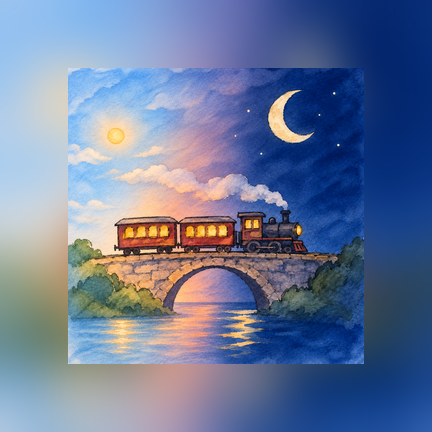
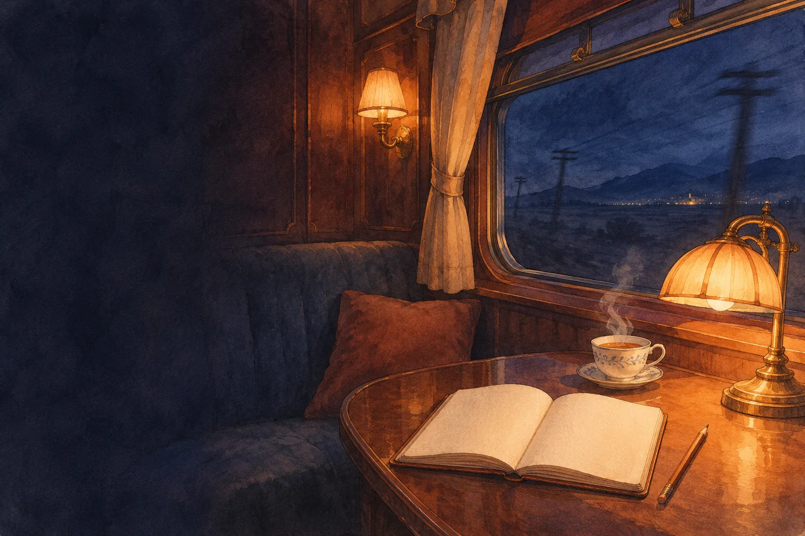
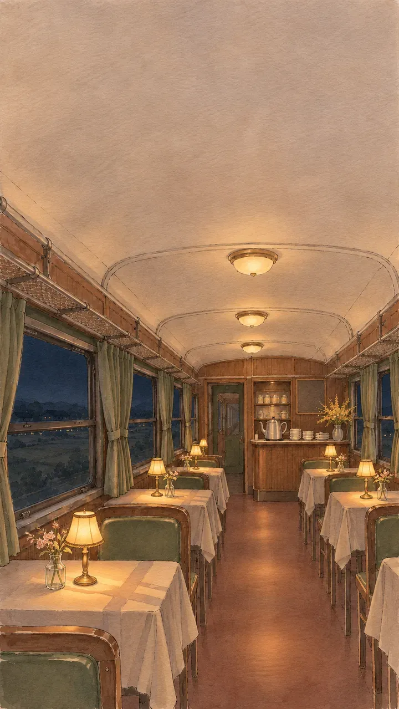
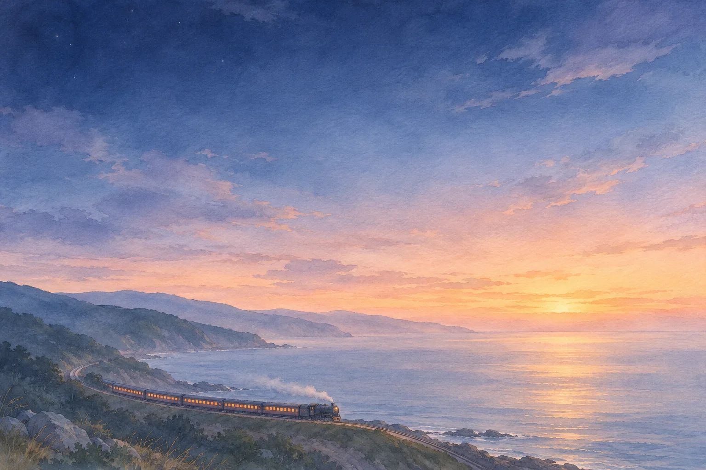

选一条线
丝绸之路、青藏、京沪、台湾环岛……十五条真实的铁路线。上了车，到终点前不换线。

夜行列车 下载车窗是你唯一的风景
丝绸之路线 · 陇海线西段 + 兰新线
始发站
Xi'an
十三朝古都，城墙还能骑车绕一圈

为什么是一趟夜车
没有排行榜，没有打卡焦虑。只有一盏台灯，一杯慢慢凉掉的茶，和窗外缓缓后退的山。你不必赶路——列车会替你记住，你已经走了多远。
三件事
丝绸之路、青藏、京沪、台湾环岛……十五条真实的铁路线。上了车，到终点前不换线。
15、25、45、60 分钟任选。窗外风景在动，你只管做手上的事。离开超过 30 秒，车票上会记一笔晚点。
攒满 25 分钟，列车停靠一站，出一张车票。零头分钟不会浪费，留给下一段。
线路图
一个省里的车站全部到过，这个省就亮起来。跑完的线可以再跑，退票时到过的站也照样算数。
时刻表
票夹
日期、区间、晚点几分钟，都印在上面。翻翻票夹，就知道自己这一周走了多远。做成分享卡片，发给一起赶路的人。

餐车
专注攒铜板：5 分钟 1 枚，到一站 +2，跑完一条线 +20。
茶叶蛋、绿皮车上的泡面、兰州的牛肉拉面——桌上的点心，会陪你坐到下一站。
两套车厢
九十一座车站，每一站都有白天和夜晚两幅画。拖动看看。
铁轨的节奏、车厢的低鸣。点一下右上角，现在就能听。
锁屏也照常计时。到站时一声轻响，通知里就能继续发车或休息。
实在坐不住可以下车，已经专注的分钟照样入账，只是这一程没有铜板。
所有记录只存在你的手机里。没有账号，没有推送轰炸。
